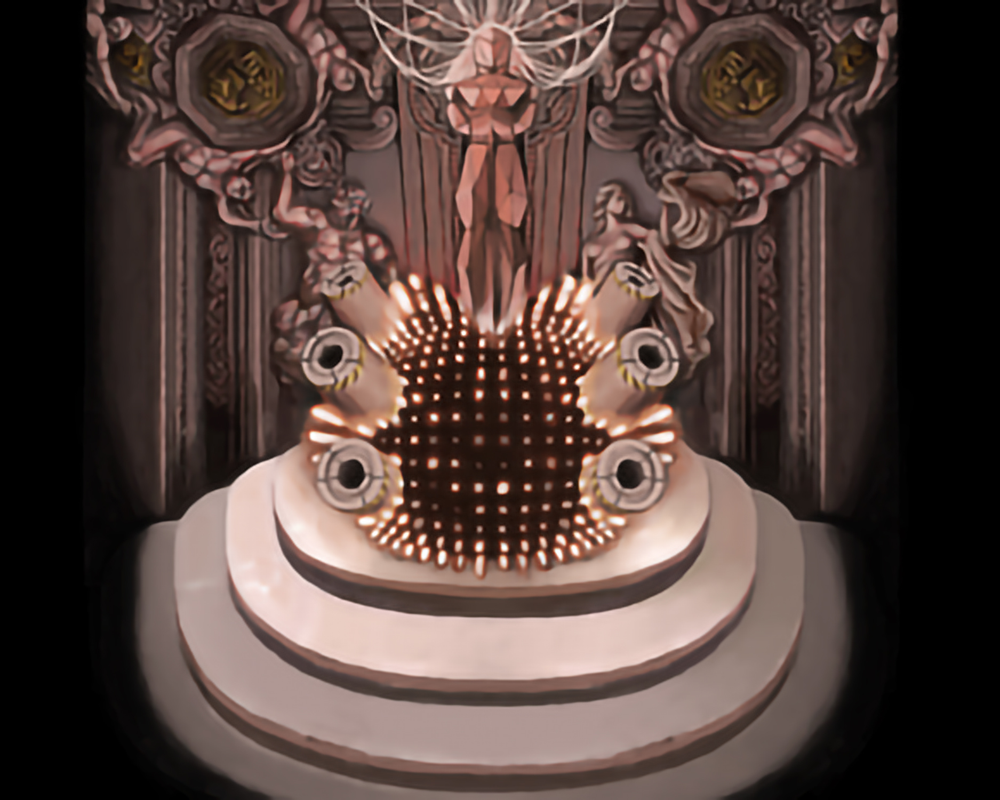

The User Experience of Art and Its Designed Systems
2025 (ongoing)
A version of this paper will be presented at SECAC 2025.

This paper aims to critique the design-thinking systems within museum architecture, exhibition design, and art curation that shape the visitor experience of art. Drawing heavily from theories of human-computer interaction and frameworks of user-experience (UX) design, this paper seeks to understand and criticize some of the current and foreseeable issues of art exhibitions in the 21st century. I will be using the framework of User Experience of Art (UXA) to reposition visitors (users) at the center of cultural institutions’ programming models. UXA identifies cultural institutions as experience providers—as opposed to object-oriented spaces—that should prioritize user engagement over passive spectatorship. As a form of evaluating the engagement of the user in the human-art relationship, I will be using the computational concepts of input, processing, and output. Input refers to a type of information or action that is entered on behalf of the user. Processing is the transformative processing of an input into a translated output. For instance, I am currently pressing the buttons on my computer to write this very sentence (input) and the computer processes these actions into the letters on my screen (output). The computer and I have a symbiotic relationship of supplying one another with action and information.
Through the UXA framework, I am seeking to critique the design-thinking systems that shape the human-art relationship, particularly the white cube model (WCM). The WCM isolates artworks to elevate their status at the cost of isolating users within liminal spaces. In their liminality, users become invisible compressions as they perform their pre-programmed ritual of consuming and ‘engaging’ with art as the museum guides them through its system. The experience of museums mimics contemporary web UX design principles where there is emphasis on creating frictionless experiences that do not require thought on behalf of the user: e.g. users instinctively know the menu is located at the top of a webpage and users follow the architectural flow of the museum. In both online spaces and the museum, users become embedded—or lost—within the system rather than using the system as they lack the ability to input; cutting off the potential of processing an output. These systems are designed as a self-sufficient process that does not require the user for anything other than their own presence. And when input is enabled, it is often an illusion that produces prefabricated outputs.
There is a computational theory that imagines how the computer conceptualizes humans. Based on the input that we provide computers, they could imagine humans as creatures with one finger (for clicking buttons), one eye (for seeing the screen/buttons), and ears (for receiving sound). Between the interactions of the human and computer, the two reaffirm each other's existence through their communication (input/processing/output). In connecting this idea to the museum and the experience of art, I argue that when users (visitors) lack the ability to input sincerely, they effectively become invisible in the art museum’s system—hindering their ability to engage with art and participate in transformative processing.
Mediating the World (and Ourselves) on Fire: for the Benefit of Platform Capitalism
2024
Aaron Bushnell’s self-immolation outside the Israeli Embassy in Washington, D.C., 2024., https://www.newyorker.com/news/our-columnists/aaron-bushnells-act-of-political-despair
This paper aims to critique how fire functions as an aestheticized representation of destruction within contemporary media culture, ultimately serving the visual and economic demands of platform capitalism. Across social media, news outlets, and cultural production, fire is deployed as a symbol of crisis—whether through climate disaster footage, protest coverage, or acts of self-immolation. Rather than invoking transformation or rupture, these images are flattened into consumable spectacle: circulated for engagement, optimized for algorithms, and stripped of their material stakes.
I examine how fire is used to encode urgency and catastrophe while simultaneously neutralizing them. Media platforms aestheticize destruction through cinematic editing, emotional cues, and visual excess, turning fire into content that feeds endless cycles of monetization and distraction. From viral news clips to livestreamed self-immolations, the image of fire becomes a symbolic interface between viewers and their fire-rendered world. In this way, I argue that fire is no longer a threat to our systems but is a visual asset that performs and supports collapse.
The Flesh, Metal, & Rot of Fear & Hunger 2: Termina
2024

Logic from Fear & Hunger 2: Termina
This paper examines Fear & Hunger 2: Termina, a 2022 survival horror RPG, as a work that engages with the aesthetics of machine-age war. Through its fusion of industrial warfare, gothic horror, religion, occultism, and body transformation/mutilation, the game explores issues of transhumanism and dehumanization under machine-age warfare. Set in a liminal reality in the aftermath of a World War II-like event, Termina portrays the human body as disposable assemblages of parts that are subject to willing and unwilling mutation. As such, it highlights how modern warfare transformed the visualization of the human body as newly developed ways to destroy one another were developed: machine guns, tanks, flamethrowers, gas, etc. Environments within the game are filled with organic and inorganic rot to emphasize the lack of sanctity of the body amidst trash in these conditions: bodies, limbs, and sewage with building rubble, scrap metal, rust, weapons, bullet shells. Termina also stages Gnostic pessimism in which divine and technological forces alike erode personhood under militarism. These ideas culminate in the game’s ending of the “Machine God,” a deity born of war, in the pursuit of utopia, that serves a metaphor for how modern states co-opt technological advancement.
Shitposting as Political Praxis & Sincerity in Crisis: Aesthetics & Rhetoric of Trump and Harris' Media Campaigns
2024
Donald J. Trump (@realDonaldTrump), X, November 28, 2024, 6:43PM. https://x.com/realDonaldTrump/status/1862281187600793830.
This paper examines the aesthetics and rhetorical strategies of shitposting in contemporary online political media. It argues that while sincerity attempts to engage earnestly with political discourse, shitposting has become a dominant tactic of the conservative and alt-right movements with their use of irony, rage-bait, and memetics to destabilize mainstream narratives and fuel reactionary politics. Through an analysis of Donald Trump and the broader memeification of politics, this paper demonstrates how the asethetics and rhetoric of shitposting operates as an effective form of ideological warfare. In contrast, the Democratic Party's reliance on sincerity often fails to resonate within a media environment that circulates around spectacle and and engagement; the key ingredients for reactionary politics.